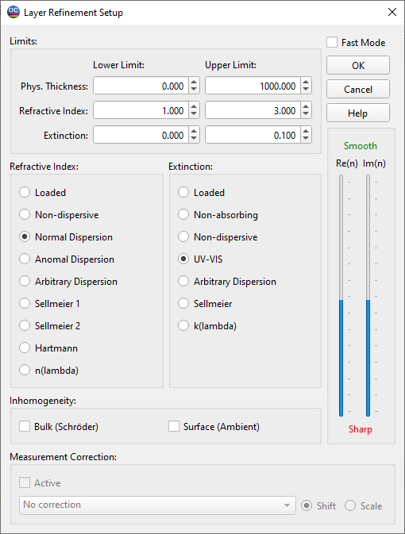

Layer Refinement
The Refinement Setup window shares similarities with the Layer Characterization Setup window. The default thickness limits are defined as ranging from h/1.4 to 4h , where h represents the thickness stored in computer memory. The lower and upper limits for both the refractive index and the extinction coefficient are established based on the settings in the Layer Characterization Setup window. However, users have the flexibility to reset these limits as needed.

The lower section of the Refinement Setup window offers a selection of models for the layer refractive index and extinction coefficient. Users can choose the desired model by selecting the corresponding field. The name of each model, such as non-dispersive or normal dispersion, reflects the physical significance of the model.
The models n(λ) and k(λ) represent an arbitrary but smooth dependence of the refractive index and extinction coefficient on wavelength. These models encompass many parameters and are most suitable for complex cases where other models may not be sufficient.
When either the n(λ) or k(λ) model is selected, the corresponding slider on the right side of the dialog can be utilized to control the smoothness of the associated function.
The top positions of the sliders correspond to very smooth functions. As you move the sliders down, you can attain increasingly complex functions with many fine features. It is crucial to exercise caution when decreasing the smoothness, as the inverse problem may become unstable at certain points, resulting in solutions that lack physical meaning. Always verify the obtained results against a priori information and common sense.
In addition, simple inhomogeneity models can also be utilized. These include the first-order Schröder inhomogeneity and a surface overlayer near the ambient medium.
Moreover, it is possible to specify Measurement Correction if there is evidence of potential drift or scale issues in the measurement data being processed. With this choice, the measurement data points will be adjusted during the Layer Characterization procedure to minimize the value of the discrepancy.
The layer refinement mode aims to minimize the discrepancy between theoretical and experimental data, starting from the result currently stored in computer memory. This mode is particularly useful for defining the optical parameters of a layer within the framework of a new layer model or new parameter limits.